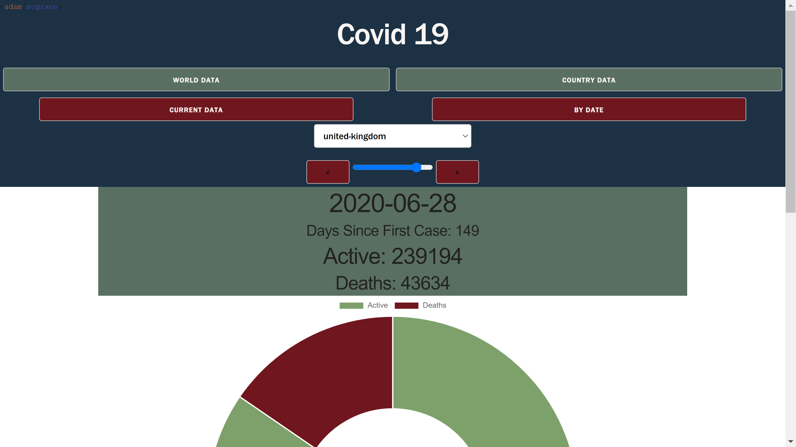

This web-app allows users to track the spread of the Coronavirus thourhg different graphs. It gives the option of seeing graphs of the whole world or a specific country. Users can also choose a specific date and a stepper function to see casses against deaths.
This was made by gathering data from an API that provides up to date numbers on the virus as well as data collected since the outbreak began. I also made use of Graph.js to allow a visul representation of the data being returned.